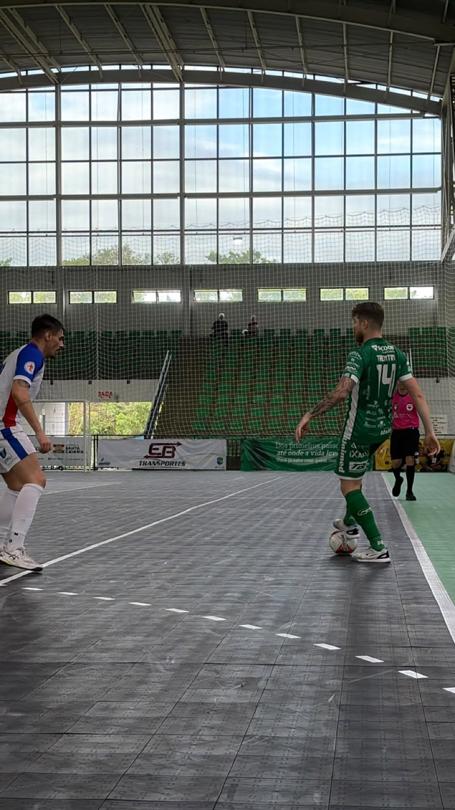

A equipe Prefeitura de Chapecó/Chapecoense/Unochapecó, representando o município, está classificada para a semifinal da fase estadual dos Jogos Abertos de Santa Catarina (JASC). Na tarde desta quinta-feira (27), o time comandado por Agnaldo Pereira venceu Itajaí por 2 a 0, pelas quartas de final, e agora decidirá uma vaga à final diante de Tubarão. O torneio é disputado em Rio do Sul.
Os dois gols da vitória do Verdão das Quadras foram marcados no segundo tempo. O ala Kassula abriu o placar, enquanto o também ala Samuka ampliou a vantagem. O confronto foi realizado na Arena Cícero Paranhos.

Agora, o time de Chapecó vive a expectativa da semifinal dos JASC. Pela frente estará a cidade de Tubarão, que eliminou Jaraguá do Sul. O duelo está marcado para esta sexta-feira (28), na Arena Cícero Paranhos. Em princípio, a partida começará às 16h.
Crédito das fotos: Prefeitura de Chapecó